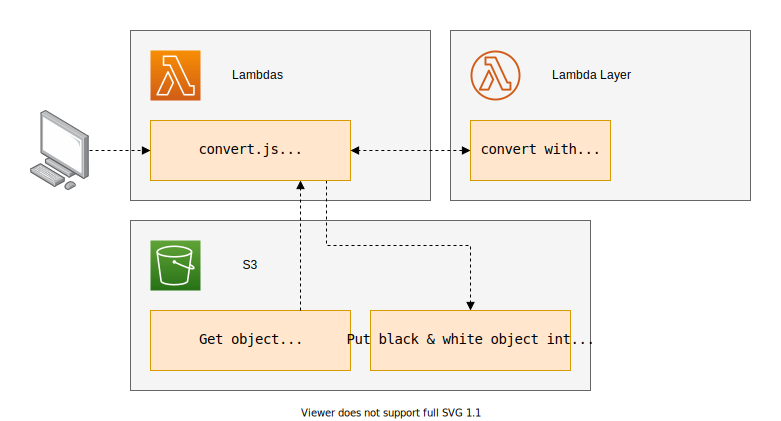
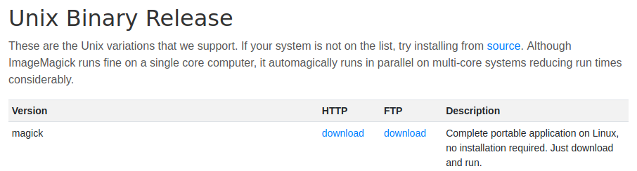
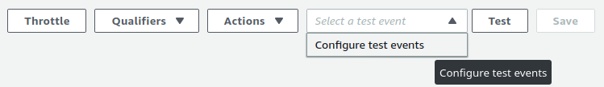
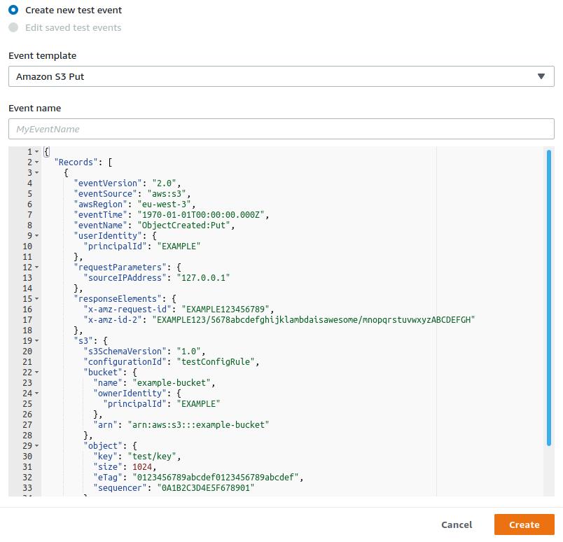

Terraform + ImageMagick + Lambda + invoke

Install and setup the project
Get the code from this github repository :
# download the code
$ git clone \
--depth 1 \
https://github.com/jeromedecoster/black-white-terraform-imagemagick-lambda-invoke.git \
/tmp/bw
# cd and setup
$ cd /tmp/bw && make init
The Lambda Layer
Using ImageMagick from a Lambda Layer is the most complex part of this project.
Because you can’t just download the static version of ImageMagick and use it :

It will throw an error :
# the error thrown by Lambda when executing `magick`
lopen(): error loading libfuse.so.2
AppImages require FUSE to run.
You might still be able to extract the contents of this AppImage
To resolve this problem, you must create ImageMagick from the source code, adding the libraries of your choice, in an environment similar to Lambda.
This project does exactly that. We will therefore use a release already made.
The init script download the release :
# imagemagick lambda layer
if [[ ! -f "./layers/imagemagick-7.0.9-20.zip" ]]; then
cd "./layers"
curl --location \
--remote-name \
"https://github.com/jeromedecoster/imagemagick-lambda-layer/releases/download/v7.0.9-20/imagemagick-7.0.9-20.zip"
fi
Let’s put the project online
To put the project online just run the following command :
# terraform the project
$ make apply
The apply script simply runs terraform :
$ terraform plan -out=terraform.plan
$ terraform apply -auto-approve terraform.plan
The s3.tf script will :
- Create a bucket with aws_s3_bucket.
- Upload the squirrel image with aws_s3_bucket_object.
- Create a lambda layer with aws_lambda_layer_version.
# ...
resource aws_s3_bucket bucket {
bucket = "${var.project_name}-${random_id.random.hex}"
acl = "private"
force_destroy = true
}
resource aws_s3_bucket_object squirrel {
bucket = aws_s3_bucket.bucket.id
source = local.squirrel_source
key = local.squirrel_key
}
resource aws_lambda_layer_version imagemagick_layer {
layer_name = "imagemagick"
s3_bucket = aws_s3_bucket.bucket.id
s3_key = aws_s3_bucket_object.imagemagick.id
compatible_runtimes = ["nodejs12.x"]
}
The lambda.tf script will :
- Create a zip of the lambda function with archive_file.
- Create the lambda function with aws_lambda_function.
# ...
data archive_file convert_zip {
type = "zip"
source_file = local.convert_source
output_path = local.convert_output
}
resource aws_lambda_function convert_function {
filename = data.archive_file.convert_zip.output_path
source_code_hash = filebase64sha256(data.archive_file.convert_zip.output_path)
function_name = "${var.project_name}-${random_id.random.hex}"
role = aws_iam_role.lambda_role.arn
handler = "convert.handler"
runtime = "nodejs12.x"
layers = [aws_lambda_layer_version.imagemagick_layer.arn]
}
The config.tf script includes a little trick :
- Use a null_resource to execute a local-exec.
- This command write some variables inside a settings.sh file. Each duplicate line is remove with an awk script.
- The argument triggers is used with the join function to minimize the number of writes.
resource null_resource settings_sh {
triggers = {
#everytime = uuid()
rarely = join("-", [
local.aws_region,
aws_s3_bucket.bucket.id,
aws_lambda_function.convert_function.function_name,
fileexists("../settings.sh")
])
}
provisioner local-exec {
command = <<EOF
echo 'AWS_REGION=${local.aws_region}
BUCKET=${aws_s3_bucket.bucket.id}
FUNCTION=${aws_lambda_function.convert_function.function_name}' >> ../settings.sh;
awk --include inplace '!a[$0]++' ../settings.sh
EOF
}
}
The Lambda function is fairly straightforward :
exports.handler = async (event) => {
let record = event.Records[0]
let rand = Math.random().toString(32).substr(2)
let basename = path.basename(record.s3.object.key)
let data = {
region: record.awsRegion,
bucket: record.s3.bucket.name,
key: record.s3.object.key,
input: `/tmp/${rand}`,
output: `/tmp/gray-${rand}`,
converted: `converted/${basename}`
}
try {
await getObjectToTmp(data)
await exec(`/opt/bin/convert ${data.input} -colorspace Gray ${data.output}`)
await putGrayObject(data)
return {
statusCode: 200,
body: `https://${data.bucket}.s3.${data.region}.amazonaws.com/${data.converted}`,
}
} catch (err) {
throw new Error(err)
}
}
// get an object from S3 and write it to /tmp
async function getObjectToTmp(data) {
let result = await s3
.getObject({
Bucket: data.bucket,
Key: data.key
})
.promise()
return fsp.writeFile(data.input, result.Body)
}
// put an object from /tmp to S3
async function putGrayObject(data) {
let body = await fsp.readFile(data.output)
return s3
.putObject({
Body: body,
Bucket: data.bucket,
Key: data.converted,
ACL: 'public-read',
ContentType: 'image/jpeg'
})
.promise()
}
Test the Lambda with invoke
To test the Lambda we just run the following command :
# test the lambda with invoke
$ make invoke
The invoke command is used to test the Lambda function exactly like in the web console :
- As if we were creating a test event :

- And choosing the Amazon S3 Put template :

The invoke command must be used like :
$ aws lambda invoke \
--function-name my-function \
--payload '{ "name": "Bob" }' \
response.json
The invoke script will :
- Generate a payload for the squirrel image hosted on S3 using the s3-put-payload.sh script.
- Invoke the Lambda function.
- Download the converted image.
# generate the payload for `squirrel.jpg`
PAYLOAD=$(bash "./scripts/s3-put-payload.sh" uploads/squirrel.jpg)
# invoke the lambda
aws lambda invoke \
--function-name black-white-imagemagick \
--payload "$PAYLOAD" \
"./invoke-output.json"
# download the converted image
URL=$(jq '.body' --raw-output invoke-output.json)
curl $URL --output "./squirrel-gray.jpg"
Our colored image :
Is now successfully converted :